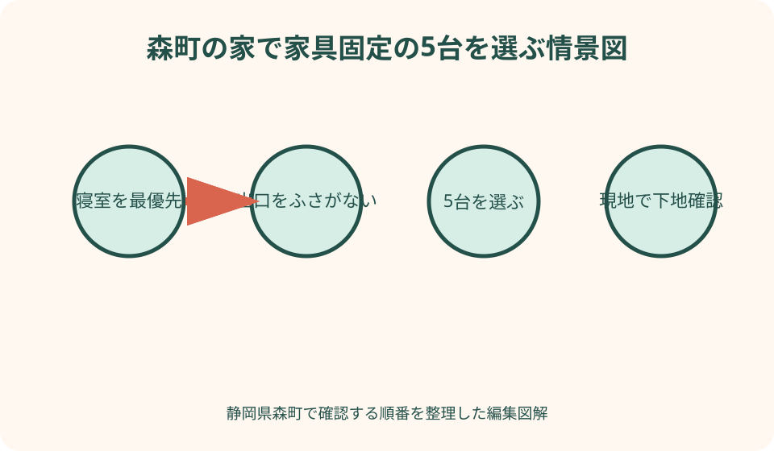
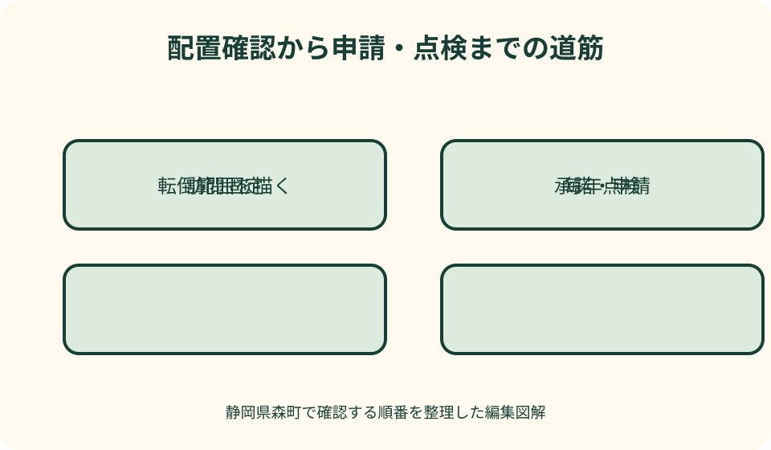

防災・家族の備え｜最終確認 2026-08-10
静岡県森町の地震対策で家具転倒を防ぐ｜固定場所・申請・避難動線
家具固定は、金具を買うことからではなく、倒れた家具が誰に当たり、どの扉をふさぐかを確かめることから始まります。森町には町内世帯を対象にした固定事業があるため、対象家具と5台の優先順位を決めてから申請すると、暮らしに合う備えへつなげられます。

編集イラスト結論：5台を均等に選ばず、人命と避難動線から順位を付ける
森町の家具固定事業は一世帯5台までです。家中の家具を一度に固定する制度ではないため、背の高い順だけで選ぶのではなく、就寝中の人へ倒れる家具、部屋の出口をふさぐ家具、ガラスや重い物が飛び出す家具、冷蔵庫など移動する家電から優先します。
最初の一歩は、家族が寝る位置へ横になり、家具がどちらへ倒れるかを床へ想像して線で示すことです。倒れた高さの範囲に頭や体が入るなら、配置変更か固定を急ぎます。固定前に家具を別の壁へ移すだけで危険を減らせる場合もあります。
次に、玄関、居室の扉、廊下、階段まで歩きます。倒れた家具や飛び出した引き出しが一つでも通路をふさぐ配置なら、たとえ普段は邪魔でなくても避難の弱点です。固定と同時に向きや位置を変える候補にします。
金具は家具と壁の両方へ力が伝わるため、壁下地や家具の強度に合わない自己流施工は避けます。森町の事業を使う場合は申請後に登録事業者が訪問します。対象外の家具や6台目以降は、施工できる専門家へ別に相談します。
森町家庭内家具等固定推進事業の対象・台数・費用
森町公式ページによると、事業の対象は森町内に住所を有する世帯です。持家だけに限るという記載ではありませんが、借家やアパートでは申請書に家主等の承諾欄があるため、穴あけや原状回復を含めて所有者・管理者へ事前確認が必要です。
固定台数は各世帯5台までです。以前に利用した世帯も、過去分を含む固定台数の合計で5台までとなります。前回3台を固定した世帯が、再び新規5台を頼める仕組みではありません。過去の利用内容が分からなければ、申請前に定住推進課へ確認します。
通常の世帯負担額は、1台600円、2台1,200円、3台1,800円、4台2,400円、5台3,000円です。町が固定金具を用意し、町から委託された森町建築工業組合の組合員が住宅を訪問して固定作業を行います。
町公式では、65歳以上の人のみで暮らす世帯、身体障害者手帳1級または2級の人がいる世帯、要介護または要支援の人がいる世帯、療育手帳または精神障害者保健福祉手帳を持つ人がいる世帯は自己負担なしとしています。個別の該当確認は申請窓口へ行います。
対象例は、タンス、食器棚、本棚などの家具、冷蔵庫、通常の作業で固定可能なその他の物です。ピアノや固定が難しい電化製品等は対象外と明記されています。対象外だから危険がないという意味ではなく、別の施工方法を専門家へ相談する対象です。
申請前に5台の候補を室内図へ書き込む
各部屋を紙へ簡単に描き、扉、窓、寝具、日常的に座る場所、暖房器具、家具を記入します。正確な間取り図でなくて構いません。家具の高さに相当する転倒範囲を矢印で描くと、人や出口へ届くかを家族全員で判断できます。
優先度を赤・黄・青の三段階にします。赤は寝ている人へ倒れる、出口をふさぐ、火気へ当たる物です。黄は食器や本などが大量に落ちる物、青は人が長くいない場所の低い家具です。5台は赤から選びます。
候補ごとに、家具の幅・高さ、設置する床、壁の種類、家具と壁の隙間、上置きの有無を記録します。壁紙の表面だけを見ても下地位置は分かりません。訪問時に事業者が確認できるよう、家具の前や上の荷物を片付けておきます。
大型家具を自分で無理に動かさないことも重要です。床を傷めるだけでなく、家具が傾いてけがをするおそれがあります。配置変更を希望する場合、それが事業の作業範囲か、別料金や事前移動が必要かを定住推進課へ確認します。

寝室・子ども部屋・高齢者の居室を最初に見る
就寝中は揺れに気付いても家具から離れる時間がありません。寝具の頭側と両脇には背の高い家具を置かないのが第一候補です。移動できない場合は、倒れる向きを寝具から外し、適切な器具で固定します。
子どもは家具へ登ったり、引き出しを階段のように使ったりすることがあります。地震対策だけでなく日常事故の防止として、背の高い収納を遊ぶ場所から離し、複数の引き出しが同時に開かない工夫も検討します。
高齢者や障害のある家族は、揺れの後に床へ散らばった物を越えて移動することが難しい場合があります。ベッドから扉までの幅を実際の歩行補助具で通り、家具だけでなくテレビ台、床置き収納、延長コードも動線から外します。
介助する人がベッドの左右へ入る空間も残します。家具を固定しても、救助や介助に必要な場所が荷物で埋まれば別の危険になります。固定後の室内を、夜間の照明が消えた状態でも歩けるか想像します。
玄関・扉・廊下をふさぐ向きに家具を置かない
家具が倒れて玄関扉までの通路をふさぐと、建物が無事でも外へ出られません。扉の開く弧と家具の転倒範囲を重ね、出入口付近には背の高い収納を置かない配置を優先します。
引き出しや開き戸は、本体が倒れなくても揺れで飛び出し、通路を狭くします。扉開放防止器具や引き出し止めを検討し、重い物は下段へ移します。食器棚のガラスには飛散防止も組み合わせます。
廊下や階段の壁へ飾った額、鏡、時計も落下物になります。家具固定事業の5台とは別に、小物の位置と取り付けを点検します。特に階段では、落下物を避ける動きが転落につながるため、頭上の物を減らします。
玄関収納の上へ水や防災用品を高く積むと、避難時に落下して靴を履けない場合があります。非常持出袋は取り出しやすくしつつ、揺れで扉をふさがない低い位置へ固定または収納します。
壁下地と器具の組合せは専門家に確認する
内閣府の案内では、壁へのL字金具による固定が基本例として示されています。しかし、石こうボードの表面だけへねじを留めても十分な強度が得られない場合があります。柱や間柱など確実な下地へ取り付ける必要があります。
突っ張り棒だけで済ませる場合も、天井の強度、家具との隙間、設置位置が合わなければ期待した効果が得られません。壁や床へ直接固定できないときは、複数種類の器具を組み合わせる考え方がありますが、製品説明と専門家の判断を優先します。
上下に分かれた食器棚や本棚は、上段と下段が別々に動かないよう連結部も確認します。壁へ固定しても家具自体が分離すれば上部が落ちます。棚板、扉、収納物の飛び出し防止まで一つの点検にします。
固定後も、ねじの緩み、ベルトの劣化、家具の移動、模様替えで状態が変わります。年1回と大きな揺れの後に目視し、異音、傾き、壁の割れがあれば触り続けず、施工者や専門家へ相談します。
冷蔵庫・テレビ・電子レンジは家具と違う動きをする
冷蔵庫は重く、キャスター付きの機種もあるため、転倒だけでなく移動して通路をふさぐ可能性があります。町事業の対象例に冷蔵庫が含まれていますが、機種や壁の条件によって施工方法が異なるため、訪問時に確認します。
テレビは台の上から落ちる、本体が前へ倒れる、台ごと移動するという複数の危険があります。テレビ本体と台、台と床や壁をそれぞれ確認し、メーカーが指定する固定部や器具を使います。
電子レンジや炊飯器を冷蔵庫や棚の上へ置いている家庭では、落下防止と配線の余裕を同時に見ます。固定具があってもコードが引っ張られ、火花や転倒を招かないかを確認します。
暖房器具や調理器具の近くには、倒れた棚、カーテン、本、衣類が届かない配置にします。家具固定はけがだけでなく、地震後の出火を防ぐ観点でも重要です。固定できない物は、まず火気から離します。
食器棚・本棚は中身の落下も止める
食器棚本体を壁へ固定しても、扉が開けば皿やガラスが床へ飛び出します。開き戸には揺れを感知する留め具などを検討し、ガラス部分へ飛散防止フィルムを施工します。食器は重い物を下へ移します。
本棚は本の重量で重心が高くなり、棚板から本が落ちるだけでも足元を埋めます。棚本体の固定に加え、落下防止バーや収納量の見直しを行い、上端まで無理に詰めません。
家具の上へ箱や季節用品を積むと、固定された本体から上置きだけが落下します。箱を床へ移せない場合は、軽い物に限り、落下防止を施します。ガラス製品や工具は頭より高い場所へ置きません。
固定作業の前に中身を出す必要があるか、事業者へ確認します。重い収納物を一度に床へ並べると作業動線をふさぐため、仮置き場所と戻す順番を決めます。戻す際に不要品を減らすと、家具の総重量も下げられます。
賃貸・アパートでは承諾と原状回復を先に確認する
森町の申請書には、借家・アパート等の場合に所有者または管理者が固定を承諾する欄があります。口頭でよいと自己判断せず、申請書の様式を示して記入方法を確認します。
同申請書の条件には、借家・アパート・公営住宅を退去する際、金具等の取り外しと原状回復を各自の費用で行う旨が記されています。固定時の負担だけでなく、退去時の費用と作業も家族の記録へ残します。
穴あけを認められない住宅では、配置変更、背の低い家具への入替え、床と天井の条件に合う器具の併用などを検討します。ただし接着器具や突っ張り器具も床・壁を傷める場合があるため、管理者と製品説明を確認します。
公営住宅や集合住宅では、共用廊下や玄関前へ家具や荷物を逃がして置くことはできません。専有部分の避難動線を確保し、建物全体の避難ルールも管理者から確認します。

良い点：地元の施工者と優先場所を具体化できる
森町の事業の良い点は、町内世帯が申請し、町が用意する金具で、委託を受けた森町建築工業組合員の訪問固定を受けられることです。高い家具を自分だけで動かし、下地を探して施工する危険を減らせます。
1台600円という明確な負担額と5台の上限が示されているため、家族で優先順位を話し合いやすくなります。費用免除の対象世帯も明記され、支援が必要な家庭の入口が分かります。
申請前の室内点検によって、固定対象外の落下物や、家具を置かない方がよい場所も見つかります。金具を取り付ける5台だけでなく、室内全体の安全空間を整えるきっかけになります。
地元の施工者が訪問することで、家具の種類、壁、床、住まいの状況を現地で確認できます。ただし、固定後の転倒を完全に保証する制度ではありません。配置、収納、日常点検を組み合わせて危険を下げます。
注文したい点：5台の外側と固定後の管理は世帯に残る
注文したい点は、一世帯5台という上限だけでは、家具の多い住宅や二世帯住宅の全てを固定できないことです。制度を利用した5台以外について、配置変更、自費施工、買替え、収納削減のどれを行うか別に決める必要があります。
対象は通常の作業で固定可能な家具等であり、ピアノや固定困難な電化製品等は対象外です。対象外品の危険度を低く見積もらず、メーカー、専門施工者、管理者へ適した方法を尋ねます。
町のページに費用と対象は示されていますが、壁材ごとの施工可否、訪問日時、家具移動の範囲などは各家庭で異なります。申し込めばその場で何でも固定できると考えず、写真や寸法を用意して窓口へ質問します。
固定金具を付けても、大きな地震で転倒しないことを完全に保証するものではないと申請書に明記されています。固定済みという安心だけに頼らず、寝る位置、通路、収納物、ガラス、火気を継続して見直します。
代案・結論：工事を待つ間は配置と中身から変える
申請から施工まで時間がある場合は、寝具を家具の転倒範囲から外し、家具の向きを出口と反対へ変えます。重い物を下段へ移し、家具の上の箱やガラスを降ろします。金具を付けなくても今日できる変更です。
家具を移動できない場合は、その部屋で寝る人や座る位置を一時的に変えます。特に乳幼児、高齢者、介助を受ける人の場所から優先し、夜間の避難経路へスリッパや靴、照明を用意します。
5台を超える分は、危険度順に次の段階へ分けます。町事業の5台、専門家へ自費で依頼する物、配置変更で対応する物、処分・買替えを検討する物という四つに分けると、未対応が見えます。
結論として、今日行うのは家族が長く過ごす場所と出口を写真に撮り、倒れた家具が届く範囲を図へ描き、最優先の5台を選ぶことです。その一覧を持って定住推進課住まい支援係へ最新条件と申請手順を確認します。
家族に残す家具固定台帳
台帳には部屋名、家具名、寸法、固定日、固定方法、施工者、次回点検日を書きます。固定前後の写真を同じ向きから撮れば、家具の移動や金具の緩みを後から比較できます。
町事業を使った家具は通算5台の対象数が分かるよう、申請日と台数を残します。住宅の所有者が変わったり、世帯内で申請経験が共有されなかったりしても、再申請時に確認しやすくなります。
賃貸住宅では、所有者・管理者の承諾書、固定場所の写真、退去時の原状回復条件をまとめます。設備の修理や模様替えで金具を外したときは、台帳を「未固定」へ戻します。
家具を処分・買替えした場合も記録を消さず、撤去日と新しい家具の安全確認を追記します。新しい家具が低い、作り付けだからといって、中身の落下や扉開放の確認を省かないようにします。
大石の視点：固定位置は建物と暮らしの記録でもある
大石の視点では、家具固定のために壁下地や柱を確認する作業は、住まいの構造を知る入口です。ただし、金具の施工だけで建物自体の耐震性を判断することはできません。家具固定と住宅の耐震診断は別の確認として扱います。
森町の実家を遠方の家族が管理している場合、家具の固定状況だけでなく、誰がどの部屋で寝るか、鍵の保管、避難経路、近所の連絡先も実家カルテへ残します。帰省時だけ使う部屋も、長く無人だから安全とは限りません。
空き家に近い状態でも、片付けや点検で家族や業者が入ります。倒れかけた家具を無理に動かさず、建物の損傷、床の傾き、道路からの進入、残置物を順に確認します。売却を決める前でも安全記録は役立ちます。
私は、固定金具の数を成果にするより、寝室と出口に危険が残っていないかを重視します。道路、境界、農地、登記名義の整理と同じく、住まいの安全も確認日と担当者を残せば、住み続ける場合にも将来手放す場合にも引き継げます。
まとめ：申請前の現地確認が5台の価値を高める
森町家庭内家具等固定推進事業は、町内に住所を有する世帯を対象に、合計5台まで家具等を固定する制度です。通常は1台600円で、町公式が定める高齢者のみの世帯などは自己負担がありません。
対象例はタンス、食器棚、本棚、冷蔵庫などで、通常の作業で固定可能な物に限られます。ピアノや固定困難な電化製品等は対象外です。申請書を定住推進課窓口へ提出する前に、最新の受付条件を確認します。
5台は、寝室、子ども・高齢者の居室、出入口、食器棚、冷蔵庫から危険度で選びます。本体の固定だけでなく、扉、引き出し、ガラス、収納物、家電の移動、火気との距離も点検します。
まず室内を一周して写真を撮り、家具の転倒範囲と避難経路を一枚へ描いてください。配置を変えられる物は今日動かし、施工が必要な5台は家族で合意して、森町定住推進課住まい支援係へ相談するのが確実な順番です。
公式情報・確認先
掲載内容は次の一次情報を基礎に整理しました。営業、料金、催し、交通は変わるため、出発前または手続き前にリンク先で最新情報を確認してください。
- 森町家庭内家具等固定推進事業（静岡県森町、2026-08-10確認）
- 家庭内家具等固定申請書（静岡県森町、2026-08-10確認）
- 防災（静岡県森町、2026-08-10確認）
- 特集3 地震に備える（内閣府、2026-08-10確認）
- 家具・家電転倒防止対策 対策のポイント（内閣府、2026-08-10確認）